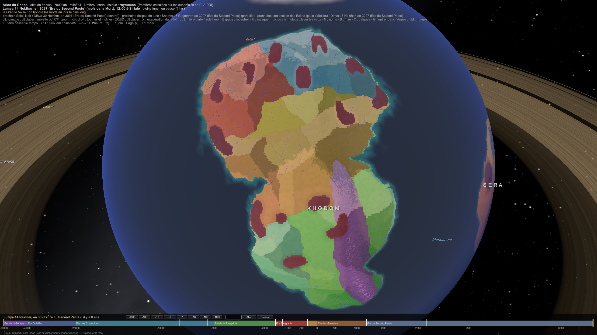
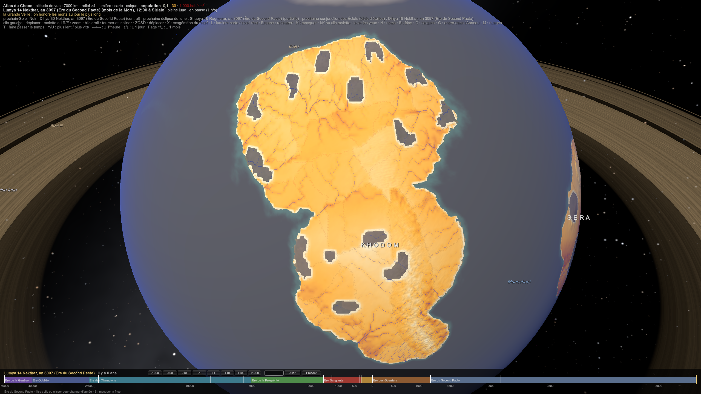
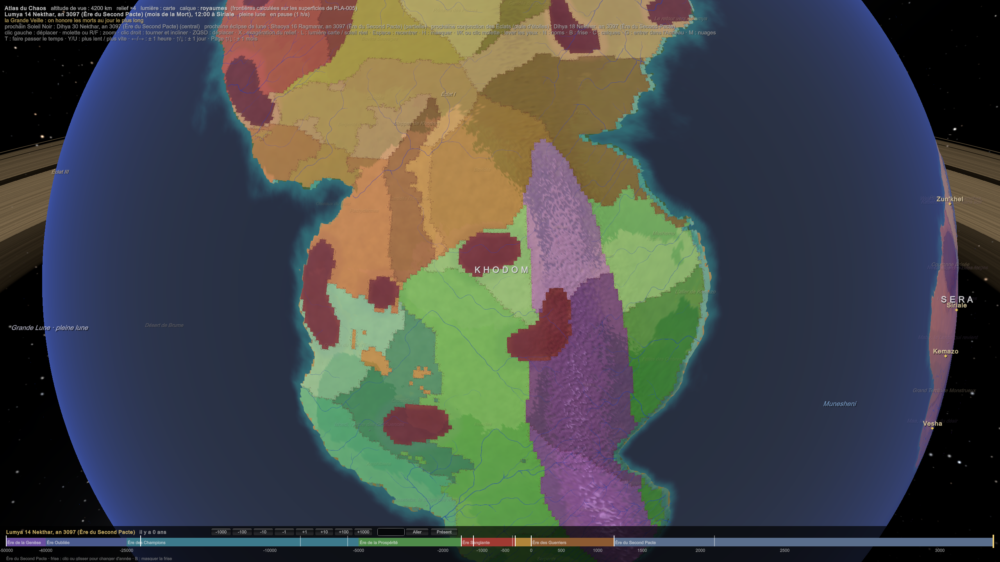

CIV-033 — Khodom, le continent des Lumas
Son intention, donnée avec les Hejeti : montrer le regard de mépris que les Muntu portent sur ce qui est différent, à travers les Lumas qu'ils veulent coloniser (le roman de l'auteur).
Ce qui est posé :
- le peuple : 28 tribus, ≈ 109 M d'âmes, 16,7 M km² ; les Lumas descendent des bêtes ;
- les dieux : Kélia, la Mère Verte, est la déesse protectrice ;
- les institutions : le Conseil des Artefacts aux Confluences, sous l'Arbre des Confluences (Ishedi, MAG-008) ; le Khodran, la langue des traités dansés ; les petites tribus longévives qui sont la mémoire (CIV-023) ;
- la biologie de chaque tribu (BIO-008).
1. Le récit officiel et la vraie histoire
- Le récit officiel (l'auteur : la mythologie « bullshit », celle des Lumas « sur le papier ») :
- les Lumas seraient nés du Sang de la Bête Primordiale, abattue par les dieux au début du monde. Son souffle aurait donné vie aux forêts, son cri aurait fait trembler les montagnes, et de son cœur auraient jailli les premiers Lumas, mi-bêtes, mi-esprits ;
- selon les chamanes, le Chaos ne les a pas créés, mais leur a donné la conscience, « un défaut divin » ;
- leurs légendes : la Grande Fracture Totémique, une guerre entre le Nord et le Sud pour un Artefact volé ; l'Ère des Chasses Sacrées sous Khar-Zah l'Insondable, « le premier à chasser un dieu mineur » ; les Confluences du Sang ; Yra'Moth, la Mère des Mille Totems ; Tchira des Feux, l'oiseau immortel tombé dans les volcans.
- C'est ce que chaque Luma apprend, et ce que chaque tribu récite : le récit légitime les totems et la place de chacun.
- La vraie histoire : les Lumas descendent des bêtes, qui ont grandi et pensé au fil des millénaires. Très peu la connaissent, et elle est souvent rejetée. Proposition, pour savoir qui la garde :
- les petites tribus longévives, les rats-taupes et les tortues, qui sont la mémoire de Khodom (CIV-023). Elles le savent, et se taisent aux Confluences ;
- les castes de prêtres Serpents, qui le savent aussi, et le cachent : leur pouvoir tient au récit officiel ;
- le DarkDen, qui sait tout.
- Le parallèle avec Sera : un Luma qui dit « nous descendons des bêtes » est rejeté par les siens pour la même raison qu'un Muntu le méprise. Personne ne veut être une bête.
- La Mère des Bêtes, c'est Kélia, la Mère Verte, la déesse protectrice de Khodom. Son Panthéon existe déjà dans ta source : le Panthéon de la Nature. On y trouve Djew (les montagnes), Iteret (les rivières), Hereret (les fleurs), Renpet (les saisons), Tjauet (les vents), Pakhret (les plantes qui soignent), Iahet (la lune des nuits sauvages), Shet-Khet (les forêts anciennes) et Apdet (les oiseaux). Les Lumas l'honorent « par l'acte, non par la prière » (ta fiche) : chasser, forger, survivre.
- « Thulz », que ta fiche respecte avec méfiance, c'est Tawurt et ses Nkaras.
- La langue : ta fiche donne le Logar comme langue maternelle, avec des dialectes de tribu. Avec le canon : le Logar au quotidien, avec l'accent de chaque tribu, et le Khodran pour les traités (CIV-023).
2. Combien ils sont (l'atlas de l'auteur)
L'atlas de l'auteur fait foi : ≈ 107,5 M de Lumas dans les 25 groupes de son atlas, plus ≈ 1,5 M pour les trois tribus de la côte, soit ≈ 109 M. Cela corrige PLA-005, qui avait ramené Khodom à 70 M.
- Pourquoi Khodom porte autant de monde, même dans le Nord : Kélia, la Mère Verte, reverse sa Foi en vie (DIV-001 Économie de la Foi). Les terres de Khodom portent plus que leur climat, et la toundra nourrit des tribus qu'aucun Arctique réel ne porterait.
| Biome | Total | Les tribus (l'atlas de l'auteur) |
|---|---|---|
| Toundra | 13 M | Ours du Nord 2 · Loups du Givre 3 · Cervidés 3 · Oiseaux du Froid 5 |
| Steppes | 11 M | Canidés des Steppes 2 · Bovins Sauvages 5 · Primates des Plaines 4 (branche des Primates) |
| Jungle | 18 M | Félins des Ombres 3 · Serpents 2 · Insectes 9 · Primates 4 |
| Savane | 19 M | Félins 5 · Bovidés 4 · Pachydermes 1,5 · Canidés 4 · Oiseaux de proie 4,5 |
| Montagnes | 12 M | Aigles 5 · Félins des Cimes 4 · Ursidés 3 |
| Désert | 7,5 M | Canidés Nomades 2 · Oiseaux du Vent 4 · Serpents du Désert 1,5 (branche des Serpents) |
| Marécages | 11 M | Crocodiles 4 · Amphibiens 4 · Oiseaux du Vent d'Eau 3 (branche des Oiseaux du Vent) |
| Volcans | 16 M | Reptiles de Feu 4 · Oiseaux de Feu 5 · Rongeurs de Faille 7 |
| Côte et îles | 1,5 M | Tortues 0,3 · Poissons totémiques 0,5 · Hippopotames 0,7 |
Les 28 tribus. Le canon a trois tribus de la côte : les Tortues, les Poissons totémiques et les Hippopotames. Ton atlas ne les a pas, mais il a trois groupes que le canon n'a pas : les Primates des Plaines, les Serpents du Désert et les Oiseaux du Vent d'Eau. Validé : on garde les 28 tribus du canon, et tes trois groupes sont des branches de tribus qui existent déjà, des Primates, des Serpents et des Oiseaux du Vent, installées dans un autre biome. Les tribus de la côte restent.
3. La politique (ton atlas)
Une confédération lâche, sans autorité centrale.
- Chaque tribu tourne autour de son Artefact sacré, totem ou relique. La plupart sont des pseudo-artefacts, et quelques-uns sont des Artefacts des premiers mortels.
- Chaque tribu choisit sa forme de pouvoir : un chef de guerre, un chamane, un conseil d'anciens, ou un triumvirat.
- Le pouvoir suprême n'existe qu'aux Grandes Confluences, quand le Conseil des Artefacts se réunit sous l'Arbre. Ta fiche dit : « souvent aussi instable que nécessaire ».
| Biome | Ce qui lie et ce qui oppose (ton atlas) |
|---|---|
| Toundra | les Ours dominent et protègent les Loups, rebelles ; les Oiseaux du Froid, dans leurs nids-forteresses, protègent les Cervidés et sont ennemis des Loups |
| Steppes | les Canidés, aux chefs élus par duel, sont les alliés temporaires des Bovins, lents mais puissants en masse ; les Primates des Plaines jouent les médiateurs |
| Jungle | les Félins des Ombres, société secrète d'élite, pratiquent une neutralité agressive ; les Serpents sont des castes de prêtres, très influentes ; les Insectes sont un essaim, effrayant et instable ; les Primates sont diplomates et rusés |
| Savane | les Félins dominent par la loi du plus fort ; les Bovidés sont souvent dominés ; la parole des matriarches Pachydermes est la plus écoutée aux Confluences ; les Canidés suivent le plus fort ; les Oiseaux de proie forment une méritocratie aux alliances instables |
| Montagnes | les Aigles ont leur Conseil des Aigles Royaux ; les Félins des Cimes, une société féodale, s'allient aux oiseaux ; les Ursidés sont respectés pour leur sagesse |
| Désert | les Canidés Nomades vivent de raids et de commerce ; les Oiseaux du Vent sont médiateurs et marchands ; les Serpents du Désert gardent des artefacts enfouis |
| Marécages | les Crocodiles obéissent au vieux mâle et tendent des embuscades ; les Amphibiens sont égalitaires et guidés par leurs chamanes ; les Oiseaux du Vent d'Eau sont marchands et espions |
| Volcans | les Reptiles de Feu se hiérarchisent par le duel ; les Oiseaux de Feu sont chamaniques et très religieux ; les Rongeurs de Faille vivent dans des cités-tunnels, instables mais puissants par le nombre (7 M) |
La conclusion de ton atlas, qui est le cœur du roman à venir :
- la force de Khodom, c'est qu'il est impossible de l'écraser d'un coup : il n'a pas de capitale à prendre ni de roi à tuer ;
- sa faiblesse, c'est qu'il est incapable de s'unir durablement : chaque Confluence devient une lutte de prestige.
4. La vie et la culture (ta fiche)
- Le nom : les Lumas, ou Enfants de la Chasse, ou Peaux-d'Esprit. « Bêtes pensantes » est l'insulte des Muntu (§ 6).
- L'emblème commun : une griffe de pierre sur un soleil brisé, l'instinct et l'équilibre entre la nature et le Chaos. Les couleurs sont l'ocre, le noir cendré, le rouge sang et le vert profond. Chaque clan peint son totem sur les boucliers et le tatoue sur la peau.
- Les valeurs :
- « La Force est Loi, mais la Loi n'est pas la Force. »
- Le respect du territoire, du totem et du serment.
- Le mensonge délibéré est un crime spirituel.
- La trahison d'un clan se punit par l'exil nu dans les Terres Sauvages.
- Le serment se scelle par une morsure, non par une signature. Avec le canon : la morsure est le geste du serment en Khodran, et c'est le vrai nom qui le fait prendre.
- Le passage à l'âge adulte : la Chasse du Sang. Le jeune Luma traque et vainc une créature de son essence totémique. Il reçoit ensuite la marque d'une griffe brûlante, et prête son premier serment.
- La vie :
- des villages fortifiés en cercle autour de l'Artefact ;
- des maisons longues, des nids suspendus, des terriers, des tunnels, selon les corps ;
- le Feu du Totem chaque soir, où l'on partage les récits et le repas.
- La table : carnée et lourde. De la viande séchée, des soupes de sang, du pain de racines, de l'hydromiel de sève et de la bière de sang. La biologie de chaque tribu (BIO-011) fait le reste.
- Les rites :
- la Danse Totémique, en transe ;
- l'Offrande de Chasse, la première proie ;
- la Veillée du Sang, où l'on brûle le cœur du défunt pour libérer son essence. Proposition : c'est leur purification. Une âme libérée par le feu ne divague pas.
- les Masques d'Âme, des reliques pour parler aux ancêtres ;
- Les fêtes :
- la Grande Confluence, tous les 33 cycles lunaires, soit ≈ 2,75 ans ;
- la Fête des Mille Chasses, à la saison des migrations ;
- le Feu du Cœur, après une guerre.
- Les tabous : manger l'animal de son totem ; dormir face au nord ; siffler la nuit.
- Les maximes :
- « La proie d'hier est la main d'aujourd'hui. »
- « Celui qui fuit son totem meurt deux fois. »
- « La meute n'oublie jamais. »
5. La guerre, et deux propositions de physique
- Le combat : la chasse, l'embuscade, le duel rituel. Chaque clan a sa Danse de Combat Totémique. Les visages sont peints de cendre et de sang.
- Le Fer du Souffle, le « métal brun, dur et vivant » des tribus de montagne. Proposition : c'est du fer céleste, le fer-nickel tombé du ciel, brun de rouille. Il est « vivant » parce qu'il boit le Chaos : il chauffe quand un mage ou un monstre approche. Pour un Luma, c'est une arme qui sent l'ennemi.
- La métamorphose partielle, que ta fiche donne à certains clans. Proposition : le Réveil. Dans la transe de la Danse, un chamane pousse le Chaos dans le corps d'un guerrier : les griffes s'allongent, le poil se dresse, la mâchoire s'épaissit, pour quelques heures. Le prix : des dizaines de chaons, et un pas de plus vers la dérive. Un Luma qui se réveille trop souvent ne revient pas : il devient la bête.
- La technique : la vapeur et l'hydraulique, à peine, dans quelques cités portuaires.
6. Le regard des Muntu, et la colonisation qui vient (proposition, d'après l'intention de l'auteur)
C'est le même regard que sur les Hejeti (CIV-032 Les Hejeti, la culture et le regard des autres) : trop pâles pour les uns, trop bêtes pour les autres.
- L'insulte : « Bêtes pensantes ». Pour un Muntu, un Luma est une bête qui parle, pas une personne. Ses serments ? Une bête ne jure pas. Ses terres ? Une bête n'en possède pas.
- « Une terre vide ». Khodom compte ≈ 6,5 habitants au km², contre 18 à Sera, et pourrait en nourrir bien plus (SIM-13). Les cartographes de Kemazo et d'Arhamya le décrivent comme presque vide. C'est ce chiffre, et non la vérité, qui justifiera la colonisation : une terre qu'on dit vide, on la prend.
> [!science] La « terre de personne »
> Les colonisations européennes se sont souvent justifiées par la terra nullius, la « terre de personne » : une terre dont les habitants n'étaient pas reconnus comme propriétaires, parce qu'ils ne cultivaient pas ou ne vivaient pas en États. L'Australie a été déclarée ainsi en 1788 ; la Haute Cour australienne n'a rejeté cette doctrine qu'en 1992 (l'arrêt Mabo). - Diviser pour régner. Khodom ne peut pas être écrasé d'un coup, mais il ne s'unit jamais (ton atlas). Un colonisateur n'a pas besoin de vaincre Khodom : il lui suffit d'acheter une tribu contre une autre. Les Félins contre les Bovidés qu'ils dominent, les Oiseaux du Froid contre les Loups.
- Ce qui a déjà commencé :
- les captifs que certaines tribus vendent aux Sakaranahi de Vesha (CIV-028) ;
- les pirates de Khodom ;
- les Artefacts que le Conseil garde, et que les cours de Sera convoitent.
- Ce que les Muntu doivent aux Lumas sans le dire : leurs chevaux, leurs bœufs et leurs chameaux viennent de Khodom (CIV-019). Des rites de chasse lumas sont passés dans les armées de Sera (ta fiche).
7. Le monde
- Les alliés de commerce : Maakar. Leur maîtrise des matériaux vivants inspire les forges des Nyamakalas.
- La rivalité : Kemazo, « trop hiérarchique ». C'est aussi l'un des deux futurs colonisateurs, avec Arhamya.
- Le respect méfiant : Tawurt, où les Nkaras sont les prédateurs des âmes.
- Ce que Khodom vend : fourrures, cornes, métaux rares, artefacts du Chaos, et des captifs. Les marchés tribaux sont à la fois des lieux d'échange et des lieux d'affrontement rituel.
Gluttony : la Hekere, l'organisation d'Am-Tau
L'auteur s'en souvient : Gluttony, c'est l'ancien nom du dieu déchu de la Faim, Gûloum, aujourd'hui Am-Tau, « celui qui avale les terres », le Dévoreur des Mondes (DIV-004 Les noms des dieux).
- Déchu, mais pas mort : le Panthéon donnait sa maison (la Faim, la Convoitise Awen-Ib, l'Avarice Khetem) comme active. Proposition : il est déchu de tout culte officiel, mais il vit de la faim de tout le monde, comme le Commerce (DIV-002). C'est l'un des dieux déviants de Khal'daras (DIV-003).
- L'organisation : la Hekere, « la Faim » (Logar, de l'Auréen heqer), une société secrète de ses fidèles.
- Pourquoi Khodom : le dieu qui avale les terres a trouvé la plus grande terre à avaler. Khodom est déclaré vide (terra nullius) et va être dépecé.
- La Hekere travaille dans les comptoirs, sur les marchés de captifs et chez les chasseurs d'artefacts.
- Elle attise l'avidité des deux colonisateurs et elle sème des territoires de Chaos par des massacres, comme les Semeurs (SIM-05 Transport du Chaos).
- Ce qu'elle n'est pas : ni Kemazo ni Arhamya. Elle sert les deux et n'appartient à aucun.
Sur l'Atlas : la carte des tribus

- Les biomes reçoivent les superficies de PLA-005, placés selon tes directions :
- le nord glacé ;
- l'ouest volcanique ;
- les steppes du centre ;
- le Désert de Brume sur la côte ouest ;
- les savanes ;
- les marécages du sud-ouest et les jungles du sud.
Les montagnes sont les plus hautes terres : la dorsale de l'est. Les trois tribus de la côte tiennent la frange de la côte est, qui fait face à Sera (les Hippopotames au sud, les Tortues, puis les Poissons totémiques au nord).
- Les 31 tribus et branches se partagent leur biome au prorata de ta population. Les territoires monstrueux restent hors des tribus.
- Au survol : la tribu, son biome, sa population et sa superficie. Les deux points de la traversée (CIV-036) sont marqués.
- La population : chaque tribu reçoit exactement sa population (≈ 109 M au total), répartie dans son territoire selon les fleuves, les côtes, le climat et l'altitude. Les territoires monstrueux sont vides, comme à Sera.

Atlas - Khodom, la population des tribus - Le climat, corrigé : le climat de l'Atlas mettait un désert froid entre 20°N et 34°N. La mousson de Khodom ramène savanes et forêts de mousson au sud ; il reste un cœur désertique au centre-ouest, là où l'auteur place ses déserts (PLA-007).
- Les lieux : le cœur sacré de chaque tribu, autour de son Artefact, est placé au plus peuplé de son territoire, près de l'eau. Les noms sont en Khodran, chacun avec son sens :
| Biome | Tribu → son cœur |
|---|---|
| Toundra | Ours du Nord ‡nau‖khau (glace + montagne) · Loups du Givre ‡nau|nu (glace + nuit) · Cervidés ‡nau‖aba (glace + rivière) · Oiseaux du Froid |ari‡nau (vent + glace) |
| Steppes | Canidés des Steppes !nara|ari (chasse + vent) · Bovins Sauvages !ga‡hene (terre + marché) · Primates des Plaines |ari‡ama (vent + raison) |
| Jungle | Félins des Ombres ‖hoo|nu (forêt + nuit) · Serpents ‖hoo!oe (forêt + mère) · Insectes ‖hoo‡ama (forêt + raison) · Primates ‖hooʘoro (forêt + parole) |
| Savane | Félins !uri‡kwa (savane + griffe) · Bovidés !uri‡hene (savane + marché) · Pachydermes !uri|xam (savane + ancêtre) · Canidés !uri!nara (savane + chasse) · Oiseaux de proie !uri|ari (savane + vent) |
| Montagnes | Aigles ‖khau|ari (montagne + vent) · Félins des Cimes ‖khau‡kwa (montagne + griffe) · Ursidés ‖khau!goo (montagne + pierre) |
| Désert | Canidés Nomades ‡sa!nara (sable + chasse) · Oiseaux du Vent ‡sa|ari (sable + vent) · Serpents du Désert ‡sa!oe (sable + mère) |
| Marécages | Crocodiles !tsu|kae (marais + sang) · Amphibiens !tsuʘaa (marais + eau) · Oiseaux du Vent d'Eau !tsu|ari (marais + vent) |
| Volcans | Reptiles de Feu |gai!goo (feu + pierre) · Oiseaux de Feu |gai|ari (feu + vent) · Rongeurs de Faille |gai!ga (feu + terre) |
| Côte | Hippopotames !hoa‖aba (mer + rivière) · Tortues !hoa|xam (mer + ancêtre) · Poissons totémiques !hoa‡hene (mer + marché), la cité portuaire à vapeur |
(‖ s'écrit « || » dans l'Atlas.) Neuf mots sont ajoutés au lexique du Khodran : glace ‡nau, forêt ||hoo, feu |gai, sable ‡sa, marais !tsu, mer !hoa, eau ʘaa, pierre !goo, marché ‡hene. Les cinq comptoirs de Sera (CIV-036) sont posés sur la côte est, sans nom propre : deux comptoirs de fer de Kemazo, la mission et le comptoir d'Arhamya, le marché aux captifs de Vesha. 
- Les biomes suivent maintenant le climat réel (après la mousson). La forme de Khodom l'impose : le sud étroit est rempli par la jungle et les marécages, et la savane s'étend entre 30°N et 46°N, en grandes prairies, comme les Grandes Plaines d'Amérique du Nord.
Liens
CIV-023 Les peuples hors de Sera · BIO-008 Les Lumas, tribu par tribu · Royaume - Khodom (fiches de l'auteur) · Géographie - Khodom · Races - Tribus Lumas · CIV-032 Les Hejeti, la culture et le regard des autres · CIV-028 Vesha · MAG-008 Catalogue des Artefacts · SIM-13 La démographie · DIV-003 Dieux protecteurs des royaumes